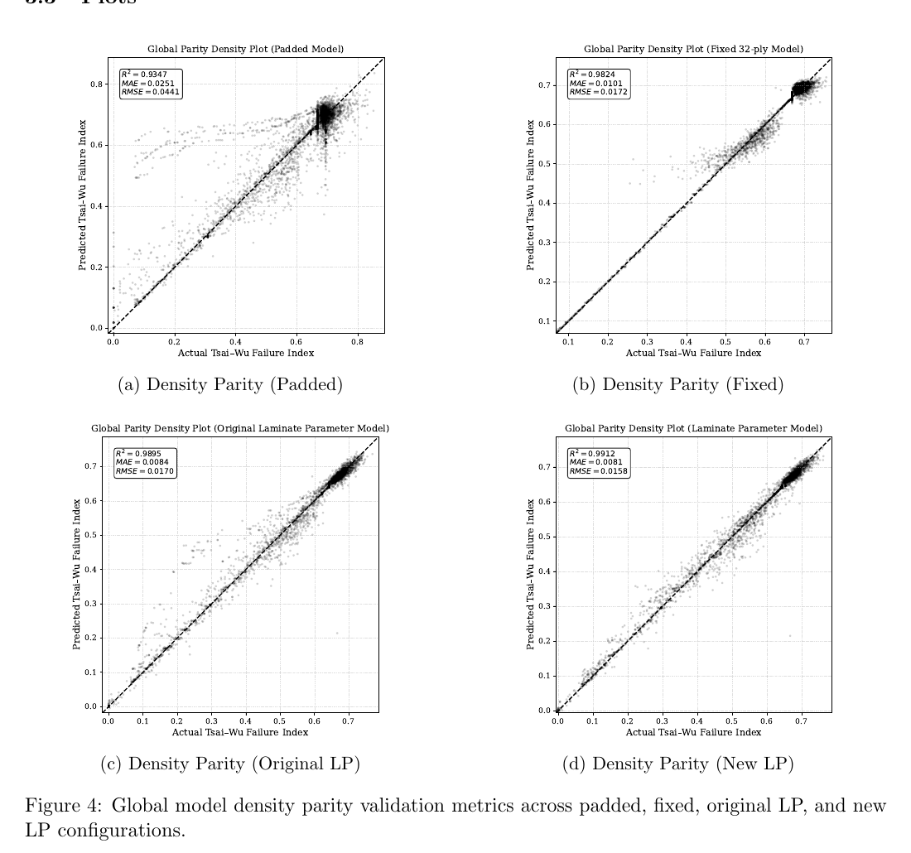
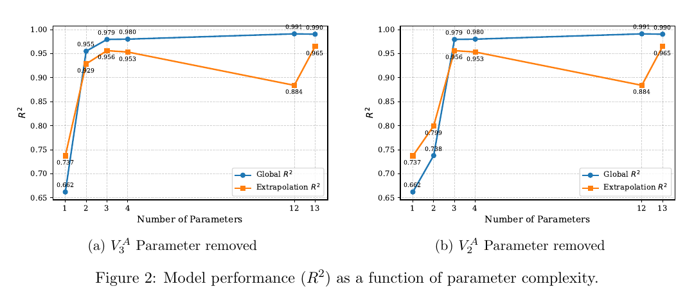
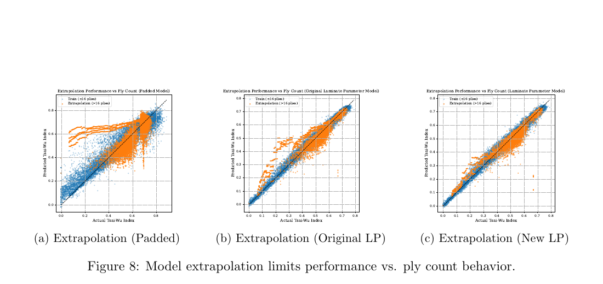

Physics-Informed Surrogate Modeling for Composite Laminate Failure
Classical Laminate Theory | Thermoelastic Failure | Laminate Parameters | XGBoost
- Python
- Classical Laminate Theory
- Tsai–Wu
- Laminate parameters
- XGBoost
Can laminate parameters provide a compact, physics-informed alternative to explicit stacking sequences for surrogate prediction of CLT-derived thermoelastic failure indices? This in-progress study compares feature representations for a computational laminate dataset. The findings below are preliminary, unverified, and have not been experimentally validated.
Technical source: “Evaluation of Laminate Parameterizations as Reduced Order State Representations for Thermoelastic Failure Prediction using Surrogate Models in Composite Laminates.”
- STATUS
- Independent research · In progress
- METHODS
- Python · CLT · Tsai–Wu · XGBoost
- MODELED MATERIAL
- AS4/3501-6
- DATASET
- 80,008 configurations reported
Can laminate mechanics provide a useful reduced-order state?
Explicit ply-by-ply stacking sequences preserve detailed architecture but produce long, variable-length model inputs. The study asks whether laminate parameters derived from CLT can encode enough structural information to predict thermoelastic failure indices with a more compact representation.
The comparison is computational: surrogate predictions are evaluated against Tsai–Wu indices generated by the analysis workflow. It does not establish agreement with physical test results.
From laminate definition to ply-level failure index
The reported Python workflow applies Classical Laminate Theory to calculate laminate stiffness, applies thermal loading, recovers stresses in the plies, and evaluates ply-level Tsai–Wu failure indices. The surrogate target is the maximum laminate failure index calculated by that pipeline.
This mechanics-based target provides a consistent computational reference for comparing input representations. It remains a model output, not a measured strength or experimentally verified failure prediction.
Sampling laminate architectures and ply counts
The report describes 80,008 configurations: eight deterministic bounding cases and 80,000 generated samples distributed across seven laminate families. The families include cross-ply, angle-ply, symmetric, antisymmetric, balanced, quasi-isotropic, and randomized architectures.
Ply counts were sampled from 4, 6, 8, 12, 16, 24, and 32. The report separately describes 80,000 samples for the variable-length stacking-sequence comparison, so the relationship between that set and the 80,008-case dataset needs clarification.
Comparing four feature representations
The study uses XGBoost regressors to compare padded variable-length stacking sequences, fixed 32-ply sequences, original laminate parameters, and laminate parameters augmented with a quasi-isotropic-distance feature. The laminate-parameter inputs summarize extensional, coupling, and bending stiffness terms and include total thickness; the added distance is the norm of the in-plane parameter vector, used to describe deviation from quasi-isotropic behavior.
Reported model settings are 300 boosting rounds, maximum tree depth 6, and learning rate 0.05. The report describes an 80/20 train/test split with random state 42, then says 10-fold cross-validation was performed on the entire dataset; whether the test partition was excluded from cross-validation must be resolved.
Strong reported fit, with metrics still to reconcile
The Figure 4 parity panels report the following global metrics for the four representations. On those printed values, the laminate-parameter models have higher R² and lower error than the padded and fixed-sequence comparisons. These are report results only: they are preliminary, unverified, and not experimentally validated.
| Representation | R² | MAE | RMSE |
|---|---|---|---|
| Padded stacking sequence | 0.9347 | 0.0251 | 0.0441 |
| Fixed 32-ply sequence | 0.9824 | 0.0101 | 0.0172 |
| Original laminate parameters | 0.9895 | 0.0084 | 0.0170 |
| Laminate parameters + quasi-isotropic distance | 0.9912 | 0.0081 | 0.0158 |

How much descriptor detail is necessary?
Feature-importance analysis motivates testing smaller laminate-parameter subsets. Figure 2 reports approximately 0.979–0.980 global R² for the illustrated three-parameter reductions, compared with about 0.953–0.956 extrapolation R². The report suggests that compact descriptors may retain useful predictive information, but these preliminary comparisons need reconciliation with the tables and text.
Reducing the descriptor set may discard distinctions between stacking sequences that share similar laminate parameters. The ongoing analysis is examining that information loss rather than assuming a reduced representation is sufficient for every architecture.

What must be resolved before drawing conclusions?
Figure 8 compares extrapolation behavior by ply count for three representations. Because the stated cross-validation used the entire dataset after an 80/20 split, the evaluation procedure needs clarification to rule out test-set leakage. The report also alternates between 80,008 and 80,000 samples, and its original-LP metrics differ between Table 5, Figure 4, and the discussion.
Next steps include checking feature and target consistency, documenting a fair split and validation protocol, reconciling all reported values, and testing generalization on independent data. The report’s discussion also contains an unfinished editorial note and an unqualified superiority claim; neither is adopted here. No experimental validation is claimed.
